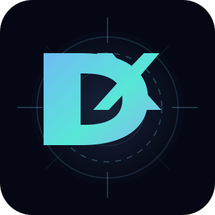

Brand Kit
DKane99 品牌系统
V6 的简化品牌手册：Logo、Digital Sigil、Wordmark、色彩、语气和使用原则都统一在这里。
PRIMARY MARK
Brand Mark
适合 GitHub 头像、favicon、网站角标与小尺寸场景。
DIGITAL PERSONA
Digital Sigil
更像“数字人格核心符号”，适合首页主视觉、封面或项目页装饰。

WORDMARK
Wordmark
适合横版封面、演示文稿首页、社交媒体横幅。
Color System
品牌色
#78A9FF
Core Blue
#58E7D7
Signal Cyan
#AE8DFF
Persona Violet
#050814
Void Black
Tone of Voice
品牌语气
克制少写夸张形容词，多用系统事实与技术结构。
工程化尽量用可运行、可验证、可复现的语言。
匿名技术内容可以公开，现实身份保持最小披露。
高级感界面保持干净、留白、深色与低饱和霓虹点缀。
资源已经放在 assets/ 里。
logo.svg、sigil.svg、wordmark.svg、og-cover.svg 都可以直接复用。